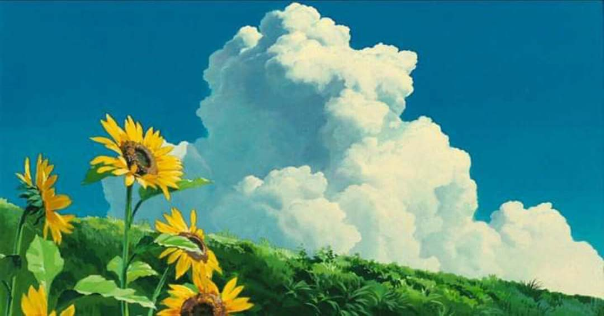
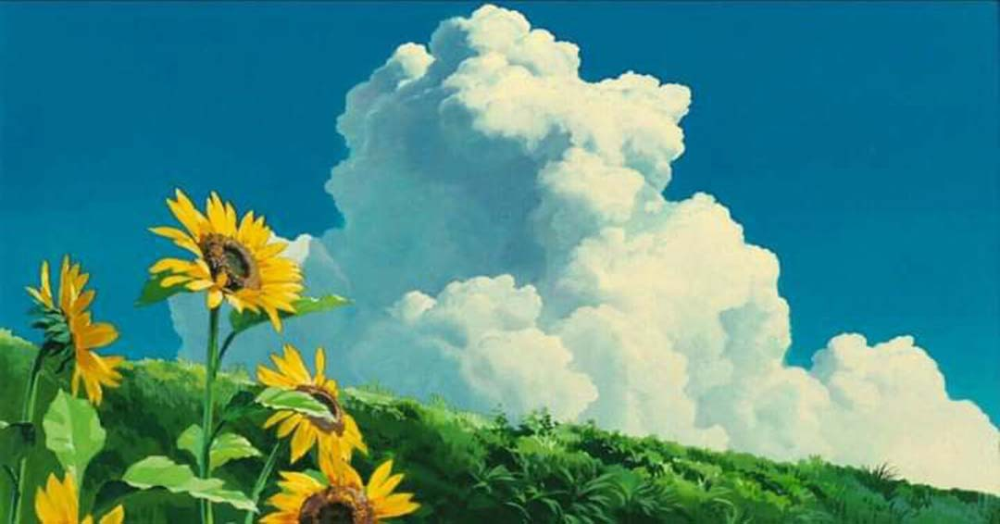

Para la práctica de la clase 9, realizaremos ejercicios haciendo uso de textos y tablas, además del uso de Media Queries y de FlexBox
Hablando de Studio Ghibli
Studio Ghibli es un estudio japonés de animación, considerado por la crítica especializada y muchos cinéfilos como uno de los mejores estudios de animación del mundo en la actualidad.
Fue fundado en 1985 por Hayao Miyazaki, Isao Takahata y Toshio Suzuki y es considerado uno de los mejores estudios de animación en el mundo. Ha producido una gran cantidad de largometrajes animados aclamados por la crítica que han obtenido numerosos premios e incluso algunas de sus entregas han sido nominadas a los Óscars.
Desde su fundación, Studio Ghibli ha producido un total de 22 películas, cada una con su propia historia y estilo visual. Entre ellas se encuentran clásicos como Mi Vecino Totoro, El Castillo en el Cielo, La Princesa Mononoke y muchas más. Sin embargo, la película más famosa del estudio es El Viaje de Chihiro, la cual ganó el premio a la Mejor Película de Animación en los Premios de la Academia en 2008.
Películas de Sutio Ghibli y sus años de estreno:
| Película | Año |
|---|---|
| Nausicä del Valle del Viento | 1984 |
| El castillo en el cielo | 1986 |
| La Tumba de las Luciérnagas | 1988 |
| Mi vecino Totoro | 1988 |
| Kiki Servicio de Entregas | 1989 |
| Recuerdos del ayer | 1991 |
| Porco Rosso | 1992 |
| Puedo escuchar el mar | 1993 |
| Pompoko | 1994 |
| Susurros del Corazón | 1995 |
| La princesa Mononoke | 1997 |
| Mis vecinos Los Yamada | 1999 |
| El viaje de Chihiro | 2001 |
| Haru en el reino de los gatos | 2002 |
| El castillo Ambulante | 2004 |
| Cuentos de Terramar | 2006 |
| Ponyo en el acantilado | 2008 |
| Arrietty y el Mundo de los Diminutos | 2010 |
| La colina de las amapolas | 2011 |
| El viento se levanta | 2013 |
| El cuento de la Princesa Kaguya | 2013 |
| El recuerdo de Marnie | 2014 |
| Earwing y la bruja | 2020 |
| ¿Cómo vives? | 2023 |
Algunas ilustraciones de Studio Ghibli son:

 
